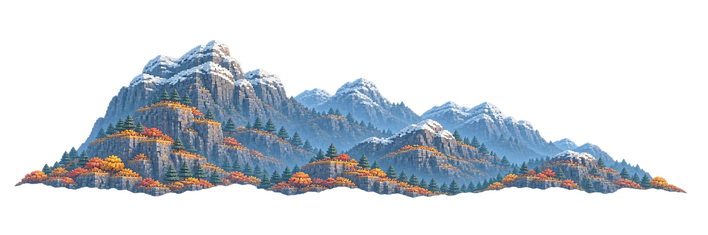
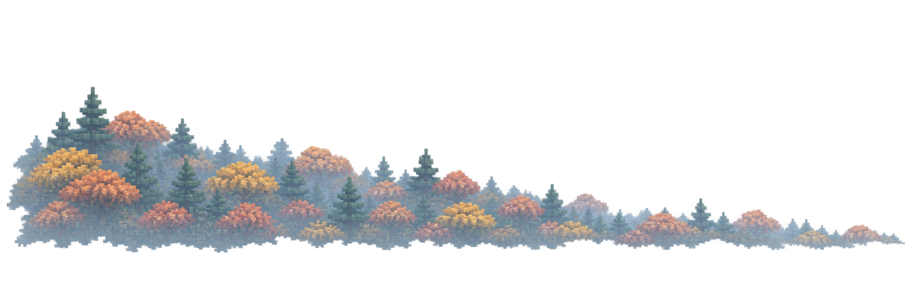
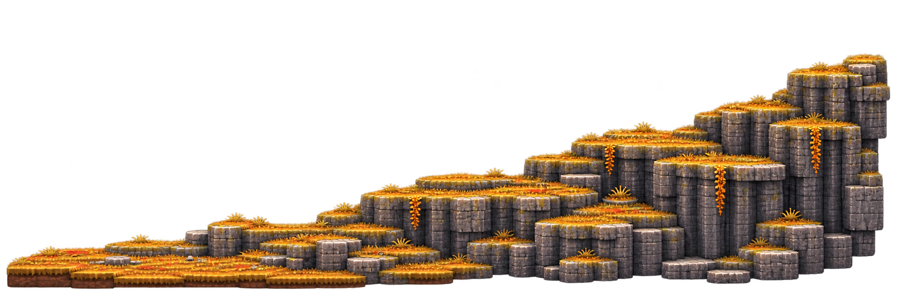
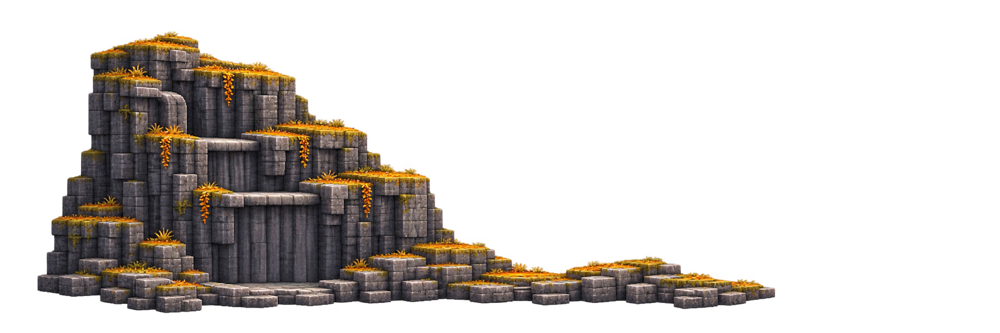
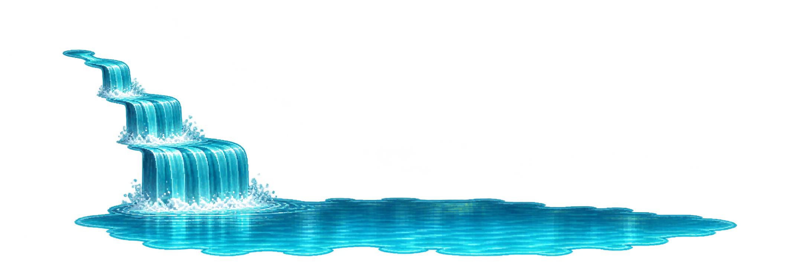
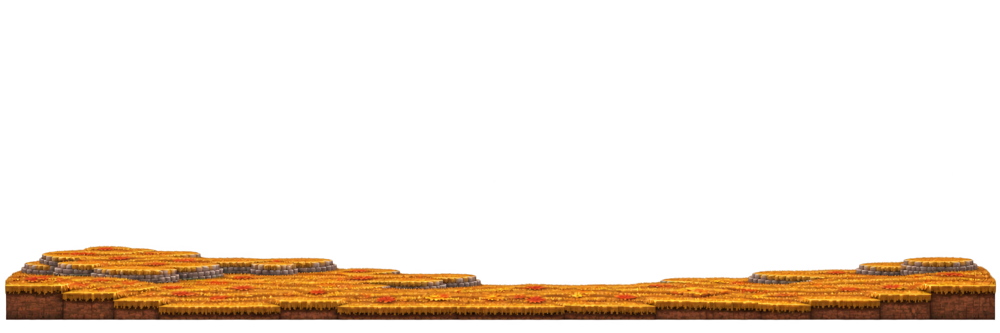
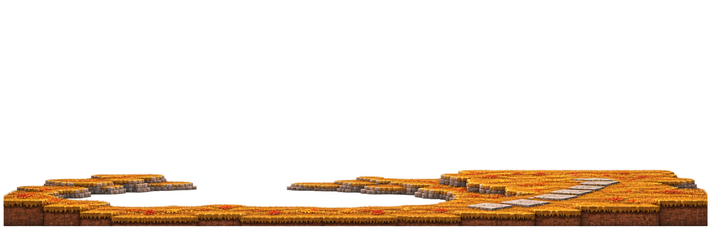
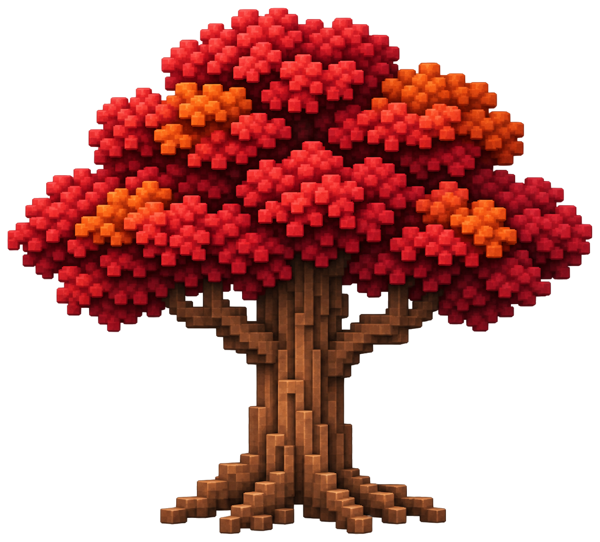

Refined autumn composition proof
Wooded descending hillside, open lake, distant landscape, and gently dressed house plains.














Wooded descending hillside, open lake, distant landscape, and gently dressed house plains.